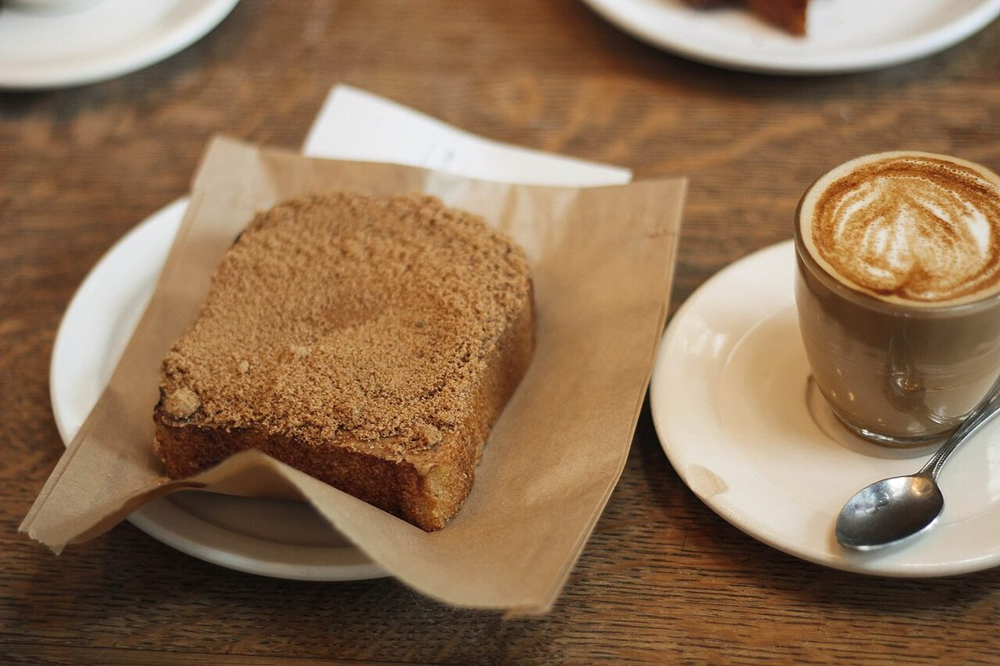
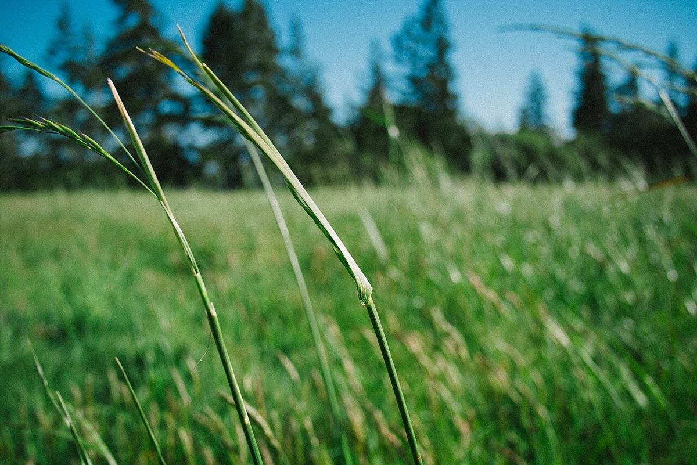

カフェ / 〒099-4113 北海道斜里郡斜里町本町３２−７
こひつじヒミツキチ
「ヒミツキチこひつじ」のご案内ページです。分かっているのは所在地とInstagramだけ。それ以外はのまま、「準備中」として並べています。

制作側の連想
「ヒミツ」から思い浮かべた黒塗りの書類
店名の由来は分かりません。制作側は「ヒミツ」という響きから、伏せ字や黒塗りのある書類を連想しました。そこでこのサイトは、確認できたことだけを開示し、まだ分からないことは黒塗りのまま「準備中」と記す、開示文書風の作りにしています。制作側の連想で、お店の理念・由来とは無関係です。
別紙1
開示されている情報
| 所在地 | 〒099-4113 北海道斜里郡斜里町本町３２−７ |
|---|---|
| 電話 | なし |
| SNS | Instagram @kohitsuji_shari |
| 営業時間 | |
| 定休日 | |
| ご予約 | |
| 駐車場 |
黒い帯の項目は準備中です。確認でき次第、差し替えます。
別紙2
添付資料(イメージ写真)
お店の写真ではありません。雰囲気を連想させるための、国外・撮影地不明のフリー素材です。


